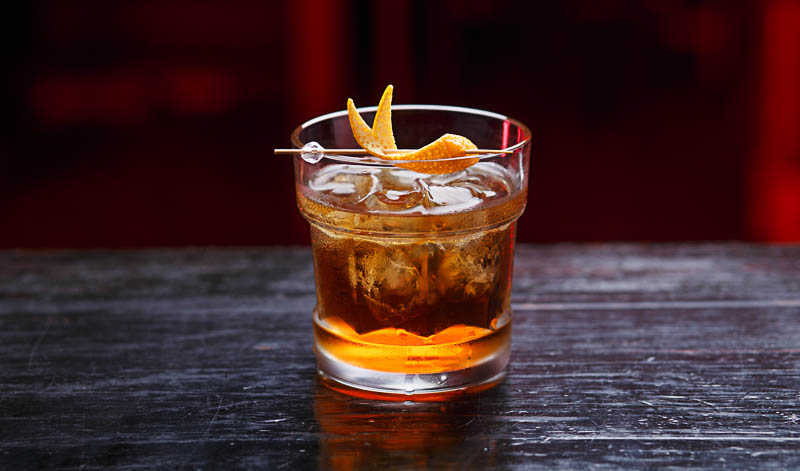

Old Fashioned Cocktail Recipe

A traditional whisky cocktail with bitters, soda water and a simple orange garnish.
Serve this old fashioned cocktail in a tumbler with plenty of ice.
Ingredients
- 2 tsp sugar syrup or 1 tsp granulated sugar
- 1-2 dashes Angostura bitters
- splash of water
- 60ml Scotch whisky or bourbon
- soda water (optional)
- orange slice
- maraschino cherry (optional)
Steps
- Put the sugar, bitters and water in a small tumbler.
- Mix until the sugar dissolves if using granulated.
- Fill your glass with ice and stir in the whisky.
- Add a splash of soda water if you like and mix.
- Garnish with the orange and cherry.
Return to Main Page